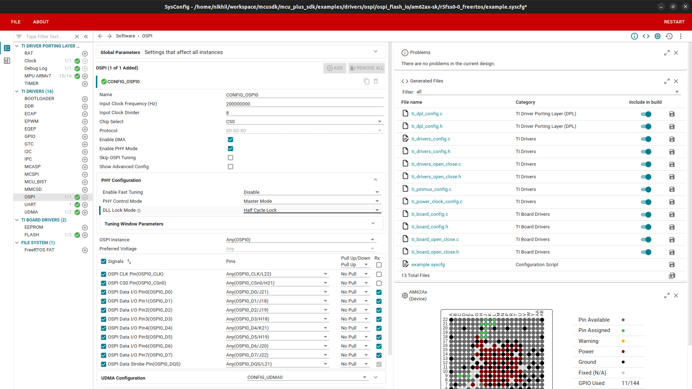
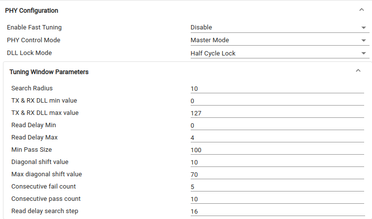
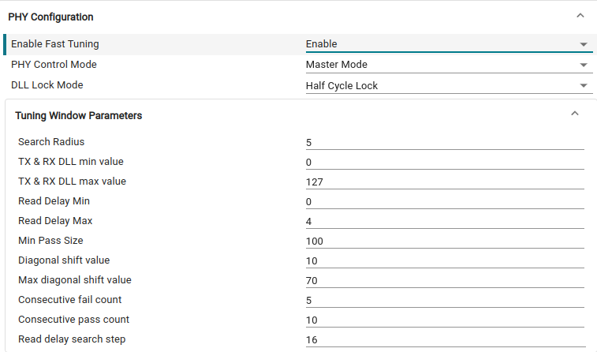
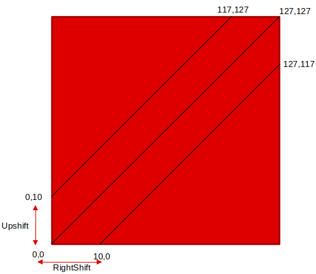
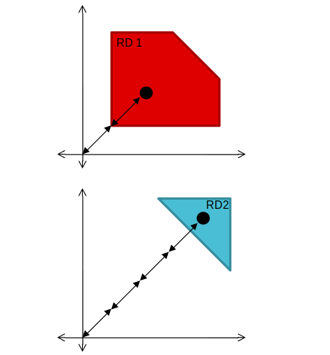
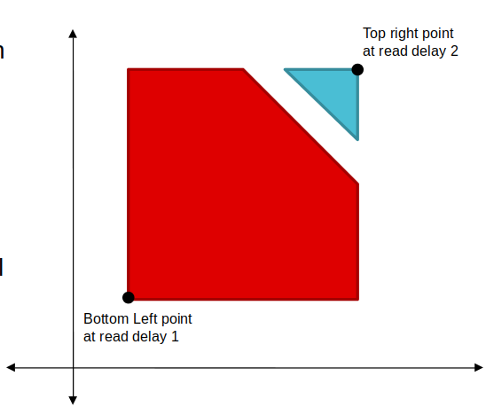
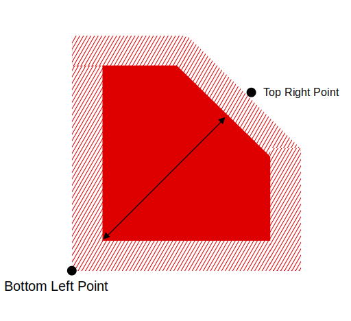
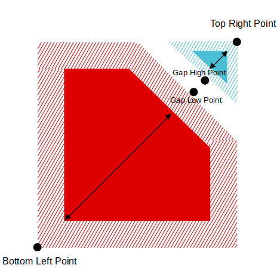
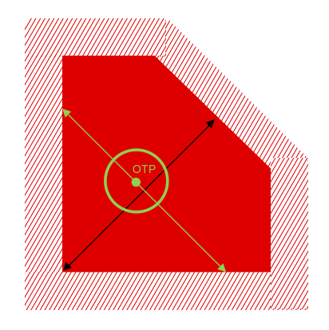
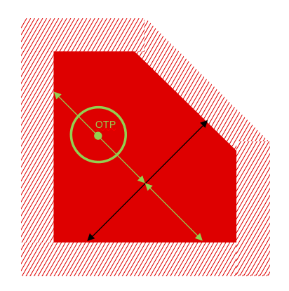

- Attention
- Please note that this driver is supported only on DM R5(WKUP R5) as part SBL examples. It is not supported on MCU-R5.
The Octal Serial Peripheral Interface (OSPI) module is a kind of Serial Peripheral Interface (SPI) module which allows single, dual, quad or octal read and write access to external flash devices. The OSPI module is used to transfer data, either in a memory mapped direct mode (for example a processor wishing to execute code directly from external flash memory), or in an indirect mode where the module is set-up to silently perform some requested operation, signaling its completion via interrupts or status registers.
- Note
- The DQS tuning algorithm has been updated from a window based search to a more robust diagonal based search. Refer OSPI Phy Tuning Algorithm for updated tuning algo implementation.
Features Supported
- Support for single, dual, quad (QSPI mode) or octal I/O instructions.
- Supports dual Quad-SPI mode for fast boot applications.
- Memory mapped ‘direct’ mode of operation for performing flash data transfers and executing code from flash memory.
- Programmable delays between transactions.
- Legacy mode allowing software direct access to low level transmit and receive FIFOs, bypassing the higher layer processes.
- An independent reference clock to decouple bus clock from SPI clock – allows slow system clocks.
- Programmable baud rate generator to generate OSPI clocks.
- Supports BOOT mode.
- Supports INDAC read without PHY.
- Handling ECC errors for flash devices with embedded correction engine.
- Skip tuning, the ospi driver reads the tuning parameters set in the previous stage, by calculating the read delay value, tuning point is set. This saves the boot time by skipping the search for tuning points.
SysConfig Features
- Note
- It is strongly recommend to use SysConfig where it is available instead of using direct SW API calls. This will help simplify the SW application and also catch common mistakes early in the development cycle.
- OSPI instance name
- Input clock frequency to be used for OSPI module
- Input clock divider which decides the baud-rate at which the flash will be read
- Chip Select
- Enable skip tuning
- Enabling of various features like DMA and PHY mode.
- PHY configuration allows to
- Enable/disable fast tuning, configuring fast/default window tuning parameters.
- Set PHY control mode (master/bypass)
- Determine if master delay line locks in half/full cycle of delay.

OSPI PHY Configurations Syscfg
- DDR Tuning parameters, contains various parameters for OSPI tuning
- Radius, search radius for tuning point verification.
- Min and max values for OSPI PHY RX/TX DLL configuration.
- Min and max values for read delays.
- Minimum Pass Size, minimum size requirement for a valid pass region.
- Diagonal shift, shift value for diagonal search.
- Maximum diagonal shift, max diagonal shift value.
- Consecutive pass and fail points, number of consecutive passing/falling points required.
- Read delay search step, step size for read delay parameter search.

OSPI DQS DEFAULT PARAMS

OSPI DQS FAST TUNING PARAMS
- In advanced config, you can choose various parameters like frame format, decoder chip select, read dummy cycles etc.
- Pinmux configurations for the OSPI instance
OSPI Phy Tuning Algorithm
The OSPI DQS tuning algorithm works as follows:
- Step 1: Select the diagonal
- Select the diagonal from (0,0) to (127,127) to perform tuning point search. This diagonal represents a linear path through the delay space with equal increments in both X and Y dimensions.
- If the search fails to find a valid tuning point along this initial diagonal, the algorithm shifts the diagonal up by 10 points (increasing Y-offset while maintaining the same slope) to perform another tuning point search.
- If the search still fails, the diagonal is shifted right by 10 points (increasing X-offset while maintaining the same slope) for another tuning point search.
- These steps are repeated in an alternating pattern (up shift, then right shift) up to a maximum shift of 70 units from the first diagonal. Each shifted diagonal maintains a 45-degree slope, ensuring systematic coverage of the delay space.
- This methodical search pattern optimizes the chances of finding a valid tuning point while balancing thoroughness with efficiency in the calibration process.

Diagonal Selection
- Step 2: Select valid read delays
- Set the read delay to its minimum value (usually 0) and perform a systematic search in steps of 16 to identify regions where valid reads are possible.
- At each step, perform validation read operations to check if the current delay value can successfully read data without errors.
- A "passing point" simply indicates that a particular read delay value works correctly - it confirms that a valid operating region exists at that delay setting.
- Once any passing point is found, increment the read delay in steps of 1 to map out the entire valid region.
- Continue testing across the full range of delay values to identify all valid regions.
- If no passing points are found across the entire range of read delay values, report failure and shift the diagonal (adjust both sample and read delays together) to find a new potential operating point.
- The calibration process aims to identify the optimal read delay values.

Read Delay Selection
- Step 3: Find the corner points
- Set the read delay to the minimum valid value found in Step 2 and find the first passing point along the diagonal from the diagonal start point by incrementing rxDLL and txDLL delay in steps of 1. This point represents the lower boundary of your valid operating window.
- Next, set the read delay to the maximum valid value found in Step 2 and search for a passing point along the diagonal from the diagonal end point by decrementing rxDLL and txDLL delay in steps of 1. This point represents the upper boundary of your valid operating window. The goal is to identify the complete range of delay values where the memory interface operates reliably.

Corner Point Selection
- Case 1: Only one read delay value
- If only one read delay was identified in Step 2, find the corner points of the line with the highest number of consecutive points. These corner points represent the beginning and end of a stable sampling window where data can be reliably read.
- Check if the length of the line (the distance between corner points) is greater than the minimum pass length. The minimum pass length is a threshold that ensures the sampling window is wide enough for reliable operation. If the line length exceeds this threshold, proceed with tuning point search; otherwise, report a calibration failure since the stable window is too narrow for reliable operation.

Corner Point Selection for One Read Delay
- Case 2: Two different read delay values
- For two different read delay regions, refine the corner points to find points with minimum consecutive passing points as defined. This process involves testing multiple adjacent points in the delay/sample space to ensure stability rather than using single isolated points.
- For each valid point found, identify the first failing point for the read delay and further refine to find the point with minimum consecutive failing points. This creates a clear boundary between passing and failing regions, improving tuning reliability.
- If no point with consecutive passing point is found, eliminate the read delay region as it's considered unstable for reliable operation and continue with remaining regions.
- For minimum read delay, search points on the diagonal in the upward direction (increasing rxDLL and txDLL delays simultaneously); for maximum read delay, search in the downward direction (decreasing rxDLL and txDLL delays). This diagonal search optimizes for finding stable operating regions.
- After finding the refined corner points, identify the corner points of the line with the largest number of passing points. This ensures selection of the most robust operating region with maximum margin.
- Calculate the length of both lines in terms of delay steps. If either length exceeds the minimum pass length, proceed to find the tuning point within this region; otherwise, report calibration failure.

Corner Point Selection for Two Different Read Delays
- Step 4: Tuning point selection
- Select the read delay region with the larger length and calculate its midpoint (midpoint1). This region represents the most stable range of delay values where reads succeed consistently.
- Find the corner points of the line defined by consecutive passing points perpendicular to the line at midpoint1. This perpendicular line crosses the stable region and helps identify the optimal sampling point by measuring across the width of the passing region.
- Calculate the midpoint (midpoint2) of the perpendicular line. This point represents the center of the stable region's width at the position determined by midpoint1. The algorithm then performs a radius check to verify if all points within a circle of specified radius around midpoint2 are passing. This ensures the selected point has sufficient margin in all directions.
- If the radius check succeeds, assign midpoint2 as the tuning point and return success. This means we've found a delay value with adequate margins, providing the best reliability for data transfers.

Tuning Point Selection at Midpoint
- If the radius check fails, divide the perpendicular line into two segments at midpoint1, select the larger segment, calculate its midpoint (midpoint3), and perform radius check. If successful, assign midpoint3 as the tuning point. This segmentation approach systematically narrows down the search area to find the optimal tuning point that satisfies the radius constraints.

Tuning Point Selection at Midpoint of Larger Segment
- If radius checks fail for both midpoint2 and midpoint3, check if the length of the line in the second read delay region exceeds the minimum pass length . If yes, repeat the tuning point selection steps for this region, applying the same methodology to find a viable tuning point.
- The second region analysis follows the same principles but operates on a different segment of the tuning space, providing an alternative area to find a stable operating point.
- If no passing points are found after exhausting all possible regions and segments, the algorithm reports a tuning failure and selects a different diagonal for analysis. This diagonal selection follows a predefined pattern to ensure comprehensive coverage of the tuning space.
- Each diagonal represents a different combination of read and write delay parameters, offering multiple opportunities to find a stable operating region.
OSPI Migration Guide
11.02.00 Changes
Features not Supported
- XIP mode is not supported yet.
Example Usage
Include the below file to access the APIs
Instance Open Example
Instance Close Example
API
APIs for OSPI
 1.8.20
1.8.20